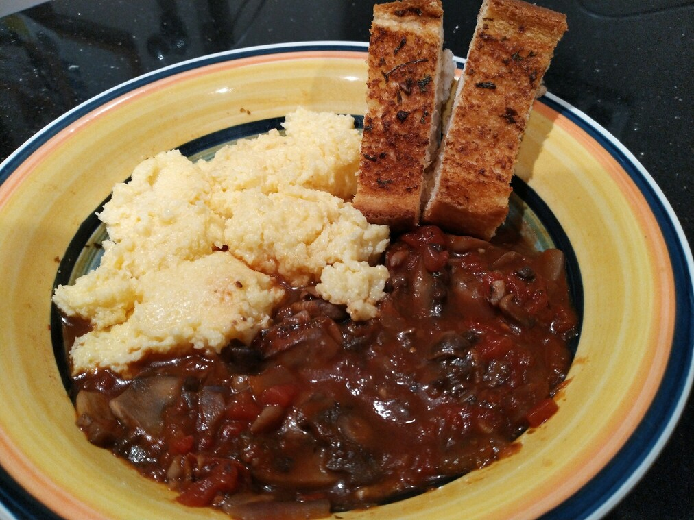

Mushroom Ragu with Creamy Polenta

2tbsolive oil
Heat olive oil in frying pan
1onion
Saute onion for 3 minutes
500gsliced mushrooms
Add sliced mushrooms and cook for 5 mins
3 clovesgarlic2 tbsoregano and @passata
Add garlic, oregano and @passata and cook until fragnant
400gdiced tomatoes2 tspbalsamic vinegar1/2 cupwater
Add diced tomatoes, balsamic vinegar and water.
Bring to the boil and then reduce heat and allow to simmer for 5 mins, until sauce thickens.
2 cupsmilk2 cupswater
To make the polenta, place milk and water in saucepan, bring to the boil
1 cuppolenta
Add polenta in a slow and steady stream, whisking constantly
Reduce to low-medium heat and cook for 4 mins
1 cupcheese50gmargarine
Add cheese and margarine, cook for 1 min